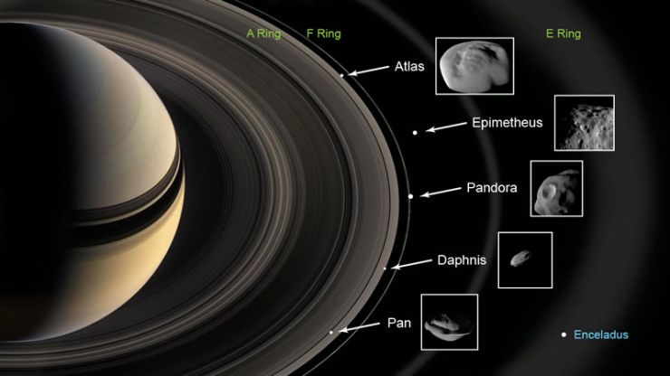
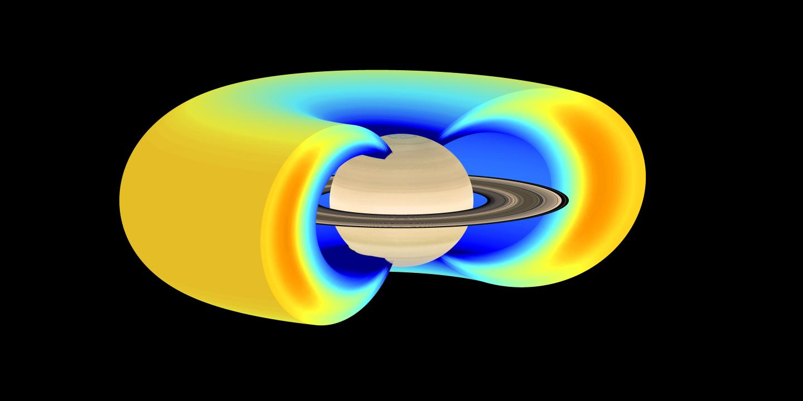

Misiones a Saturno:Un hermoso sistema lunar
Descubre las misiones que han revelado los secretos de las lunas de Saturno y su diversidad.
Descubre las misiones que han revelado los secretos de las lunas de Saturno y su diversidad.

Pioneer 11 exploró Saturno en 1979, obteniendo las primeras imágenes detalladas de sus anillos y descubriendo el anillo F. Medición del campo magnético y la atmósfera.

Voyager 1 y 2 continuaron la exploración en los 80, revelando la diversidad de anillos y lunas. Voyager 1 descubrió Janus, y Voyager 2, Encélado y Rea. Medición de atmósfera y campo magnético.

Cassini-Huygens orbitó Saturno (2004-2017). Huygens aterrizó en Titán. Cassini descubrió géiseres en Encélado y estudió los anillos. Descubrió nuevas lunas y analizó las conocidas.
Dragonfly (lanzamiento 2027, llegada 2034) explorará Titán con un dron. Estudiará química orgánica y buscará vida prebiótica. Medirá la atmósfera y buscará agua líquida.
Pioneer 11: primer sobrevuelo.
Voyager 1 y 2: exploración de Saturno.
Cassini-Huygens: órbita y aterrizaje en Titán.
Lanzamiento de Dragonfly.
Las misiones revelaron la intrincada estructura de los anillos, con miles de anillos y lunas pequeñas interactuando entre sí.
Se descubrieron vientos extremadamente rápidos y una atmósfera dinámica con tormentas gigantes y patrones climáticos complejos.

Se mapeó el fuerte campo magnético de Saturno y su interacción con los anillos y las lunas, revelando su complejidad.
Las misiones ayudaron a precisar la duración del día de Saturno y a comprender mejor su rotación.